Solve Applications with Systems of Equations
Previously in this chapter we solved several applications with systems of linear equations. In this section, we’ll look at some specific types of applications that relate two quantities. We’ll translate the words into linear equations, decide which is the most convenient method to use, and then solve them.
We will use our Problem Solving Strategy for Systems of Linear Equations.
Translate to a System of Equations
Many of the problems we solved in earlier applications related two quantities. Here are two of the examples from the chapter on Math Models.
- The sum of two numbers is negative fourteen. One number is four less than the other. Find the numbers.
- A married couple together earns $110,000 a year. The wife earns $16,000 less than twice what her husband earns. What does the husband earn?
In that chapter we translated each situation into one equation using only one variable. Sometimes it was a bit of a challenge figuring out how to name the two quantities, wasn’t it?
Let’s see how we can translate these two problems into a system of equations with two variables. We’ll focus on Steps 1 through 4 of our Problem Solving Strategy.
How to Translate to a System of Equations
Translate to a system of equations:
The sum of two numbers is negative fourteen. One number is four less than the other. Find the numbers.
Solution
Solution
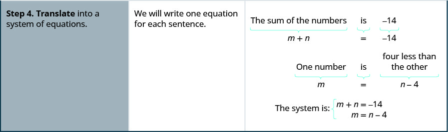
We’ll do another example where we stop after we write the system of equations.
Translate to a system of equations:
A married couple together earns $110,000 a year. The wife earns $16,000 less than twice what her husband earns. What does the husband earn?
Solution
Solution
| We are looking for the amount that the husband and wife each earn. | Let the amount the husband earns.
the amount the wife earns. |
| Translate. | A married couple together earns $110,000. |
| The wife earns $16,000 less than twice what husband earns. | |
| The system of equations is: |
Solve Direct Translation Applications
We set up, but did not solve, the systems of equations in Example 1 and Example 2 Now we’ll translate a situation to a system of equations and then solve it.
Translate to a system of equations and then solve:
Devon is 26 years older than his son Cooper. The sum of their ages is 50. Find their ages.
Solution
Solution
| Step 1. Read the problem. | |
| Step 2. Identify what we are looking for. | We are looking for the ages of Devon and Cooper. |
| Step 3. Name what we are looking for. | Let Devon’s age. Cooper’s age |
| Step 4. Translate into a system of equations. | Devon is 26 years older than Cooper. |
| The sum of their ages is 50. | |
| The system is: | |
|
Step 5. Solve the system of equations. Solve by substitution. |
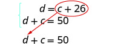 |
| Substitute c + 26 into the second equation. | |
| Solve for c. | |
| Substitute c = 12 into the first equation and then solve for d. | |
| Step 6. Check the answer in the problem. | Is Devon’s age 26 more than Cooper’s? Yes, 38 is 26 more than 12. Is the sum of their ages 50? Yes, 38 plus 12 is 50. |
| Step 7. Answer the question. | Devon is 38 and Cooper is 12 years old. |
Translate to a system of equations and then solve:
When Jenna spent 10 minutes on the elliptical trainer and then did circuit training for 20 minutes, her fitness app says she burned 278 calories. When she spent 20 minutes on the elliptical trainer and 30 minutes circuit training she burned 473 calories. How many calories does she burn for each minute on the elliptical trainer? How many calories does she burn for each minute of circuit training?
Solution
Solution
| Step 1. Read the problem. | |
| Step 2. Identify what we are looking for. | We are looking for the number of calories burned each minute on the elliptical trainer and each minute of circuit training. |
| Step 3. Name what we are looking for. | Let number of calories burned per minute on the elliptical trainer. number of calories burned per minute while circuit training |
| Step 4. Translate into a system of equations. | 10 minutes on the elliptical and circuit training for 20 minutes, burned 278 calories |
| 20 minutes on the elliptical and 30 minutes of circuit training burned 473 calories |
|
| The system is: | |
| Step 5. Solve the system of equations. | |
| Multiply the first equation by −2 to get opposite coefficients of e. | 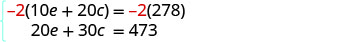 |
| Simplify and add the equations. Solve for c. |
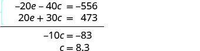 |
| Substitute c = 8.3 into one of the original equations to solve for e. | |
| Step 6. Check the answer in the problem. | Check the math on your own. |
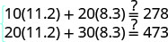 |
|
| Step 7. Answer the question. | Jenna burns 8.3 calories per minute circuit training and 11.2 calories per minute while on the elliptical trainer. |
Solve Geometry Applications
When we learned about Math Models, we solved geometry applications using properties of triangles and rectangles. Now we’ll add to our list some properties of angles.
The measures of two complementary angles add to 90 degrees. The measures of two supplementary angles add to 180 degrees.
If two angles are complementary, we say that one angle is the complement of the other.
If two angles are supplementary, we say that one angle is the supplement of the other.
Translate to a system of equations and then solve:
The difference of two complementary angles is 26 degrees. Find the measures of the angles.
Solution
Solution
| Step 1. Read the problem. | |
| Step 2. Identify what we are looking for. | We are looking for the measure of each angle. |
| Step 3. Name what we are looking for. | Let the measure of the first angle .
the measure of the second angle. |
| Step 4. Translate into a system of equations. | The angles are complementary.
|
| The difference of the two angles is 26 degrees.
|
|
| The system is | |
| Step 5. Solve the system of equations by elimination. | |
| Substitute into the first equation. | |
|
Step 6. Check the answer in the problem. |
|
| Step 7. Answer the question. | The angle measures are 58 degrees and 32 degrees. |
Translate to a system of equations and then solve:
Two angles are supplementary. The measure of the larger angle is twelve degrees less than five times the measure of the smaller angle. Find the measures of both angles.
Solution
Solution
| Step 1. Read the problem. | |
| Step 2. Identify what we are looking for. | We are looking for the measure of each angle. |
| Step 3. Name what we are looking for. | Let the measure of the first angle. the measure of the second angle |
| Step 4. Translate into a system of equations. | The angles are supplementary. |
| The larger angle is twelve less than five times the smaller angle | |
| The system is: Step 5. Solve the system of equations substitution. |
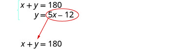 |
| Substitute 5x − 12 for y in the first equation. | |
| Solve for x. | |
| Substitute 32 for in the second equation, then solve for y. | |
|
Step 6. Check the answer in the problem. |
|
| Step 7. Answer the question. | The angle measures are 148 and 32. |
Translate to a system of equations and then solve:
Randall has 125 feet of fencing to enclose the rectangular part of his backyard adjacent to his house. He will only need to fence around three sides, because the fourth side will be the wall of the house. He wants the length of the fenced yard (parallel to the house wall) to be 5 feet more than four times as long as the width. Find the length and the width.
Solution
Solution
| Step 1. Read the problem. | |
| Step 2. Identify what you are looking for. | We are looking for the length and width. |
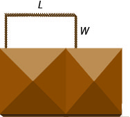 |
|
| Step 3. Name what we are looking for. | Let the length of the fenced yard. the width of the fenced yard |
| Step 4. Translate into a system of equations. | One length and two widths equal 125. |
| The length will be 5 feet more than four times the width. | |
| The system is: Step 5. Solve the system of equations by substitution. |
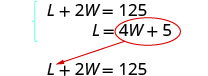 |
| Substitute L = 4W + 5 into the first equation, then solve for W. |
|
| Substitute 20 for W in the second equation, then solve for L. |
|
|
Step 6. Check the answer in the problem. |
|
| Step 7. Answer the equation. | The length is 85 feet and the width is 20 feet. |
Solve Uniform Motion Applications
We used a table to organize the information in uniform motion problems when we introduced them earlier. We’ll continue using the table here. The basic equation was D = rt where D is the distance travelled, r is the rate, and t is the time.
Our first example of a uniform motion application will be for a situation similar to some we have already seen, but now we can use two variables and two equations.
Translate to a system of equations and then solve:
Joni left St. Louis on the interstate, driving west towards Denver at a speed of 65 miles per hour. Half an hour later, Kelly left St. Louis on the same route as Joni, driving 78 miles per hour. How long will it take Kelly to catch up to Joni?
Solution
Solution
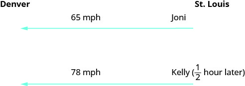
|
Identify and name what we are looking for. A chart will help us organize the data. We know the rates of both Joni and Kelly, and so we enter them in the chart. |
|
| We are looking for the length of time Kelly, k, and Joni, j, will each drive. Since we can fill in the Distance column. |
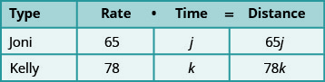 |
|
Translate into a system of equations. To make the system of equations, we must recognize that Kelly and Joni will drive the same distance. So, Also, since Kelly left later, her time will be hour less than Joni’s time. So, | |
| Now we have the system. | |
| Solve the system of equations by substitution. | |
| Substitute into the second equation, then solve for j. | |
| To find Kelly’s time, substitute j = 3 into the first equation, then solve for k. | |
|
Check the answer in the problem. Joni 3 hours (65 mph) = 195 miles. Kelly hours (78 mph) = 195 miles. Yes, they will have traveled the same distance when they meet. |
|
| Answer the question. | Kelly will catch up to Joni in hours. By then, Joni will have traveled 3 hours. |
Many real-world applications of uniform motion arise because of the effects of currents—of water or air—on the actual speed of a vehicle. Cross-country airplane flights in the United States generally take longer going west than going east because of the prevailing wind currents.
Let’s take a look at a boat travelling on a river. Depending on which way the boat is going, the current of the water is either slowing it down or speeding it up.
Figure 1 and Figure 2 show how a river current affects the speed at which a boat is actually travelling. We’ll call the speed of the boat in still water b and the speed of the river current c.
In Figure 1 the boat is going downstream, in the same direction as the river current. The current helps push the boat, so the boat’s actual speed is faster than its speed in still water. The actual speed at which the boat is moving is b + c.
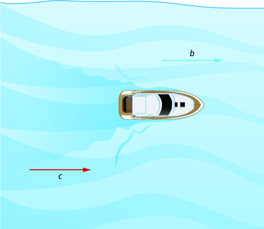
In Figure 2 the boat is going upstream, opposite to the river current. The current is going against the boat, so the boat’s actual speed is slower than its speed in still water. The actual speed of the boat is .
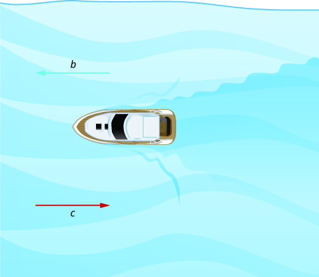
We’ll put some numbers to this situation in Example 9.
Translate to a system of equations and then solve:
A river cruise ship sailed 60 miles downstream for 4 hours and then took 5 hours sailing upstream to return to the dock. Find the speed of the ship in still water and the speed of the river current.
Solution
Solution
Read the problem.
This is a uniform motion problem and a picture will help us visualize the situation. 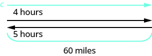
| Identify what we are looking for. | We are looking for the speed of the ship in still water and the speed of the current. |
| Name what we are looking for. | Let the rate of the ship in still water. the rate of the current |
| A chart will help us organize the information. The ship goes downstream and then upstream. Going downstream, the current helps the ship; therefore, the ship’s actual rate is s + c. Going upstream, the current slows the ship; therefore, the actual rate is s − c. |
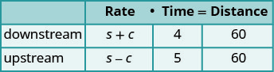 |
| Downstream it takes 4 hours. Upstream it takes 5 hours. Each way the distance is 60 miles. |
|
|
Translate into a system of equations. Since rate times time is distance, we can write the system of equations. |
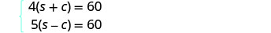 |
|
Solve the system of equations. Distribute to put both equations in standard form, then solve by elimination. |
|
| Multiply the top equation by 5 and the bottom equation by 4. Add the equations, then solve for s. |
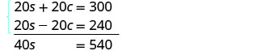 |
| Substitute s = 13.5 into one of the original equations. | 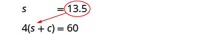 |
|
Check the answer in the problem. The downstream rate would be 13.5 + 1.5 = 15 mph. In 4 hours the ship would travel 15 · 4 = 60 miles. The upstream rate would be 13.5 − 1.5 = 12 mph. In 5 hours the ship would travel 12 · 5 = 60 miles. |
|
| Answer the question. | The rate of the ship is 13.5 mph and the rate of the current is 1.5 mph. |
Wind currents affect airplane speeds in the same way as water currents affect boat speeds. We’ll see this in Example 10. A wind current in the same direction as the plane is flying is called a tailwind. A wind current blowing against the direction of the plane is called a headwind.
Translate to a system of equations and then solve:
A private jet can fly 1095 miles in three hours with a tailwind but only 987 miles in three hours into a headwind. Find the speed of the jet in still air and the speed of the wind.
Solution
Solution
Read the problem.
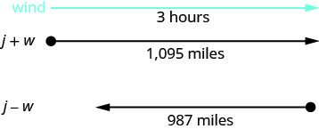
| Identify what we are looking for. | We are looking for the speed of the jet in still air and the speed of the wind. |
| Name what we are looking for. | Let the speed of the jet in still air. the speed of the wind |
| A chart will help us organize the information. The jet makes two trips-one in a tailwind and one in a headwind. In a tailwind, the wind helps the jet and so the rate is j + w. In a headwind, the wind slows the jet and so the rate is j − w. |
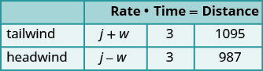 |
| Each trip takes 3 hours. In a tailwind the jet flies 1095 miles. In a headwind the jet flies 987 miles. |
|
|
Translate into a system of equations. Since rate times time is distance, we get the system of equations. |
|
|
Solve the system of equations. Distribute, then solve by elimination. |
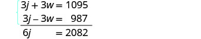 |
| Add, and solve for j. Substitute j = 347 into one of the original equations, then solve for w. |
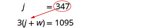 |
|
Check the answer in the problem. With the tailwind, the actual rate of the jet would be 347 + 18 = 365 mph. In 3 hours the jet would travel 365 · 3 = 1095 miles. Going into the headwind, the jet’s actual rate would be 347 − 18 = 329 mph. In 3 hours the jet would travel 329 · 3 = 987 miles. |
|
| Answer the question. | The rate of the jet is 347 mph and the rate of the wind is 18 mph. |
Practice Makes Perfect
Translate to a System of Equations
In the following exercises, translate to a system of equations and solve the system.
The sum of two numbers is fifteen. One number is three less than the other. Find the numbers.
Solution
The numbers are 6 and 9.
The sum of two numbers is twenty-five. One number is five less than the other. Find the numbers.
The sum of two numbers is negative thirty. One number is five times the other. Find the numbers.
Solution
The numbers are −5 and −25.
The sum of two numbers is negative sixteen. One number is seven times the other. Find the numbers.
Twice a number plus three times a second number is twenty-two. Three times the first number plus four times the second is thirty-one. Find the numbers.
Solution
The numbers are 5 and 4.
Six times a number plus twice a second number is four. Twice the first number plus four times the second number is eighteen. Find the numbers.
Three times a number plus three times a second number is fifteen. Four times the first plus twice the second number is fourteen. Find the numbers.
Solution
The numbers are 2 and 3.
Twice a number plus three times a second number is negative one. The first number plus four times the second number is two. Find the numbers.
A married couple together earn $75,000. The husband earns $15,000 more than five times what his wife earns. What does the wife earn?
Solution
$10,000
During two years in college, a student earned $9,500. The second year she earned $500 more than twice the amount she earned the first year. How much did she earn the first year?
Daniela invested a total of $50,000, some in a certificate of deposit (CD) and the remainder in bonds. The amount invested in bonds was $5000 more than twice the amount she put into the CD. How much did she invest in each account?
Solution
She put $15,000 into a CD and $35,000 in bonds.
Jorge invested $28,000 into two accounts. The amount he put in his money market account was $2,000 less than twice what he put into a CD. How much did he invest in each account?
In her last two years in college, Marlene received $42,000 in loans. The first year she received a loan that was $6,000 less than three times the amount of the second year’s loan. What was the amount of her loan for each year?
Solution
The amount of the first year’s loan was $30,000 and the amount of the second year’s loan was $12,000.
Jen and David owe $22,000 in loans for their two cars. The amount of the loan for Jen’s car is $2000 less than twice the amount of the loan for David’s car. How much is each car loan?
Solve Direct Translation Applications
In the following exercises, translate to a system of equations and solve.
Alyssa is twelve years older than her sister, Bethany. The sum of their ages is forty-four. Find their ages.
Solution
Bethany is 16 years old and Alyssa is 28 years old.
Robert is 15 years older than his sister, Helen. The sum of their ages is sixty-three. Find their ages.
The age of Noelle’s dad is six less than three times Noelle’s age. The sum of their ages is seventy-four. Find their ages.
Solution
Noelle is 20 years old and her dad is 54 years old.
The age of Mark’s dad is 4 less than twice Marks’s age. The sum of their ages is ninety-five. Find their ages.
Two containers of gasoline hold a total of fifty gallons. The big container can hold ten gallons less than twice the small container. How many gallons does each container hold?
Solution
The small container holds 20 gallons and the large container holds 30 gallons.
June needs 48 gallons of punch for a party and has two different coolers to carry it in. The bigger cooler is five times as large as the smaller cooler. How many gallons can each cooler hold?
Shelly spent 10 minutes jogging and 20 minutes cycling and burned 300 calories. The next day, Shelly swapped times, doing 20 minutes of jogging and 10 minutes of cycling and burned the same number of calories. How many calories were burned for each minute of jogging and how many for each minute of cycling?
Solution
There were 10 calories burned jogging and 10 calories burned cycling.
Drew burned 1800 calories Friday playing one hour of basketball and canoeing for two hours. Saturday he spent two hours playing basketball and three hours canoeing and burned 3200 calories. How many calories did he burn per hour when playing basketball?
Troy and Lisa were shopping for school supplies. Each purchased different quantities of the same notebook and thumb drive. Troy bought four notebooks and five thumb drives for $116. Lisa bought two notebooks and three thumb dives for $68. Find the cost of each notebook and each thumb drive.
Solution
Notebooks are $4 and thumb drives are $20.
Nancy bought seven pounds of oranges and three pounds of bananas for $17. Her husband later bought three pounds of oranges and six pounds of bananas for $12. What was the cost per pound of the oranges and the bananas?
Solve Geometry Applications In the following exercises, translate to a system of equations and solve.
The difference of two complementary angles is 30 degrees. Find the measures of the angles.
Solution
The measures are 60 degrees and 30 degrees.
The difference of two complementary angles is 68 degrees. Find the measures of the angles.
The difference of two supplementary angles is 70 degrees. Find the measures of the angles.
Solution
The measures are 125 degrees and 55 degrees.
The difference of two supplementary angles is 24 degrees. Find the measure of the angles.
The difference of two supplementary angles is 8 degrees. Find the measures of the angles.
Solution
94 degrees and 86 degrees
The difference of two supplementary angles is 88 degrees. Find the measures of the angles.
The difference of two complementary angles is 55 degrees. Find the measures of the angles.
Solution
72.5 degrees and 17.5 degrees
The difference of two complementary angles is 17 degrees. Find the measures of the angles.
Two angles are supplementary. The measure of the larger angle is four more than three times the measure of the smaller angle. Find the measures of both angles.
Solution
The measures are 44 degrees and 136 degrees.
Two angles are supplementary. The measure of the larger angle is five less than four times the measure of the smaller angle. Find the measures of both angles.
Two angles are complementary. The measure of the larger angle is twelve less than twice the measure of the smaller angle. Find the measures of both angles.
Solution
The measures are 34 degrees and 56 degrees.
Two angles are complementary. The measure of the larger angle is ten more than four times the measure of the smaller angle. Find the measures of both angles.
Wayne is hanging a string of lights 45 feet long around the three sides of his rectangular patio, which is adjacent to his house. The length of his patio, the side along the house, is five feet longer than twice its width. Find the length and width of the patio.
Solution
The width is 10 feet and the length is 25 feet.
Darrin is hanging 200 feet of Christmas garland on the three sides of fencing that enclose his rectangular front yard. The length, the side along the house, is five feet less than three times the width. Find the length and width of the fencing.
A frame around a rectangular family portrait has a perimeter of 60 inches. The length is fifteen less than twice the width. Find the length and width of the frame.
Solution
The width is 15 feet and the length is 15 feet.
The perimeter of a rectangular toddler play area is 100 feet. The length is ten more than three times the width. Find the length and width of the play area.
Solve Uniform Motion Applications In the following exercises, translate to a system of equations and solve.
Sarah left Minneapolis heading east on the interstate at a speed of 60 mph. Her sister followed her on the same route, leaving two hours later and driving at a rate of 70 mph. How long will it take for Sarah’s sister to catch up to Sarah?
Solution
It took Sarah’s sister 12 hours.
College roommates John and David were driving home to the same town for the holidays. John drove 55 mph, and David, who left an hour later, drove 60 mph. How long will it take for David to catch up to John?
At the end of spring break, Lucy left the beach and drove back towards home, driving at a rate of 40 mph. Lucy’s friend left the beach for home 30 minutes (half an hour) later, and drove 50 mph. How long did it take Lucy’s friend to catch up to Lucy?
Solution
It took Lucy’s friend 2 hours.
Felecia left her home to visit her daughter driving 45 mph. Her husband waited for the dog sitter to arrive and left home twenty minutes (1/3 hour) later. He drove 55 mph to catch up to Felecia. How long before he reaches her?
The Jones family took a 12 mile canoe ride down the Indian River in two hours. After lunch, the return trip back up the river took three hours. Find the rate of the canoe in still water and the rate of the current.
Solution
The canoe rate is 5 mph and the current rate is 1 mph.
A motor boat travels 60 miles down a river in three hours but takes five hours to return upstream. Find the rate of the boat in still water and the rate of the current.
A motor boat traveled 18 miles down a river in two hours but going back upstream, it took 4.5 hours due to the current. Find the rate of the motor boat in still water and the rate of the current.
Solution
The boat rate is 6.60 mph and the current rate is 2.50 mph.
A river cruise boat sailed 80 miles down the Mississippi River for four hours. It took five hours to return. Find the rate of the cruise boat in still water and the rate of the current.
A small jet can fly 1,072 miles in 4 hours with a tailwind but only 848 miles in 4 hours into a headwind. Find the speed of the jet in still air and the speed of the wind.
Solution
The jet rate is 240 mph and the wind speed is 28 mph.
A small jet can fly 1,435 miles in 5 hours with a tailwind but only 1215 miles in 5 hours into a headwind. Find the speed of the jet in still air and the speed of the wind.
A commercial jet can fly 868 miles in 2 hours with a tailwind but only 792 miles in 2 hours into a headwind. Find the speed of the jet in still air and the speed of the wind.
Solution
The jet rate is 415 mph and the wind speed is 19 mph.
A commercial jet can fly 1,320 miles in 3 hours with a tailwind but only 1,170 miles in 3 hours into a headwind. Find the speed of the jet in still air and the speed of the wind.
Everyday Math
At a school concert, 425 tickets were sold. Student tickets cost $5 each and adult tickets cost $8 each. The total receipts for the concert were $2,851. Solve the system
to find , the number of student tickets and , the number of adult tickets.
Solution
The first graders at one school went on a field trip to the zoo. The total number of children and adults who went on the field trip was 115. The number of adults was the number of children. Solve the system
to find , the number of children and , the number of adults.
Writing Exercises
Write an application problem similar to Example 3 using the ages of two of your friends or family members. Then translate to a system of equations and solve it.
Solution
Answers will vary.
Write a uniform motion problem similar to Example 8 that relates to where you live with your friends or family members. Then translate to a system of equations and solve it.
Self Check
ⓐ After completing the exercises, use this checklist to evaluate your mastery of the objectives of this section.
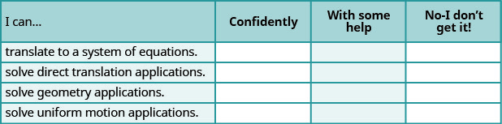
ⓑ On a scale of 1-10, how would you rate your mastery of this section in light of your responses on the checklist? How can you improve this?